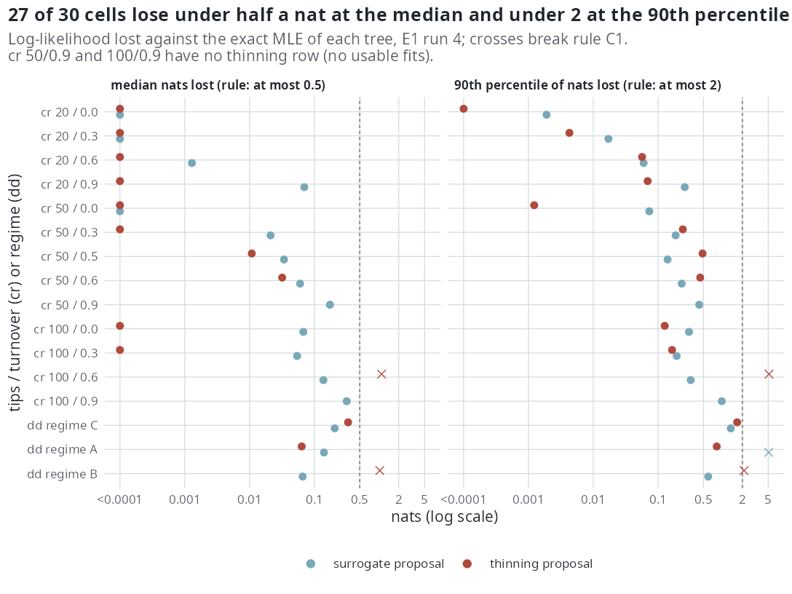

E1 — Does MCEM reach the exact maximum-likelihood estimate under cr and dd?
| Status | complete (run 4 of the package's validation study) |
| Package build | emphasis a38a9e8 (run 4); run 3 on 7442be9 kept beside it as the state before the M-step repair |
| Driver / analysis | dev/validation/run.sh in the package repository (04-analyse.R --allow-mixed-builds, 04b-init-table.R); tables by sim/E1-tables.R |
| Data | manuscript/tables/E1-A.csv (against the exact MLE), E1-B.csv (against the generating value), E1-C.csv (fixed-\(\theta\) log-likelihood); per-tree data live in the package repository's dev/validation results, not under results/ |
Question
Claims C1 and C2 of the paper: for the two models that have an exact likelihood, the constant-rate model cr (DDD::bd_ML, the Nee et al. likelihood of the reconstructed tree) and the diversity-dependent model dd (DDD::dd_ML, Etienne et al. 2012), does MCEM return the exact maximum-likelihood estimate of the same tree, and is the log-likelihood it reports the importance-sampling estimate at the returned iterate with no systematic offset? This is the only place in the study where the estimator can be checked against the quantity it targets rather than against the generating value; every model with a lineage-level covariate has no exact likelihood (Glossary).
Design
The validation study in emphasis/dev/validation (its own pre-registration dated 2026-09-13), run once more on the build under test.
| parameter | value | meaning |
|---|---|---|
cr cells |
n ∈ {20, 50, 100} tips x turnover \(\varepsilon\) ∈ {0, 0.3, 0.6, 0.9}, plus n = 50, \(\varepsilon\) = 0.5, \(\lambda\)_gen = 0.1 | a time-scale cell |
dd regimes |
A (\(\lambda\)0, \(\mu\)0, K) = (0.8, 0.1, 40), crown age 10; B (0.8, 0.2, 60), age 12; C (0.8, 0.4, 40), age 12 | draws accepted only when n ∈ [0.5K, min(1.2K, 80)]; median tips 42, 72, 36 |
| trees per cell | 20 at n = 20 and 50, 12 at n = 100, 10 per dd regime |
replicate fits per tree, so the fits column of E1-A is 60, 60, 36 and 20 |
| proposals | surrogate ("exact" in the tables; R/bdi.R) and thinning |
under cr the surrogate is the model, so its weights are constant |
| draws | 200 per E-step | |
| start | far start against MLE start | separates path and stopping error |
| reference | bd_ML(cond = 0, soc = 2) and dd_ML(ddmodel = 1) |
the unconditioned crown likelihood, the surface emphasis maximises with cond = NULL; the constant between the two at btorph = 1 is zero (max difference 1.6e-11 over 4 trees x 5 \(\theta\)) |
mapping dd |
\(\beta\)0 = \(\lambda\)0, \(\beta\)N = -(\(\lambda\)0 - \(\mu\)0)/K, \(\gamma\)0 = \(\mu\)0, \(\gamma\)N = 0 | emphasis fits four parameters, dd_ML three; dd_loglik returns -Inf for \(\mu\)0 ≥ \(\lambda\)0 |
| fixed-\(\theta\) arm (C2) | the first 5 trees per cell (4 at n ≥ 100), reported log-likelihood against the exact one at the MLE | |
| link | linear |
The primary scalar per tree is the log-likelihood deficit \(\Delta\)\(\ell\) = \(\ell\)_exact(\(\hat{\theta}\)) - \(\ell\)_exact(\(\theta\)_MLE) ≤ 0, in nats.
Pre-set rule
C1: per cell and for both samplers, from a far start, median \(\Delta\)\(\ell\) ≥ -0.5 nats and 90th percentile of |\(\Delta\)\(\ell\)| ≤ 2 nats; |z_j| ≤ 1 at the median. C2: median |g(\(\theta\))| ≤ 0.1 nats at the MLE, where g is the reported minus the exact log-likelihood, and no slope in g along \(\mu\) beyond its Monte Carlo error. The validation study carries its own stricter rules (median \(\Delta\)\(\ell\) ≥ -0.1, 10th percentile ≥ -0.5, |bias| ≤ 0.1 SE and others); its per-cell verdict table is not in the paper repository.
Results
Against the exact MLE (E1-A). 27 of the 30 cell x proposal rows pass both halves of C1 on \(\Delta\)\(\ell\).
| cell (tips / turnover) | proposal | fits | median \(\Delta\)\(\ell\) | 90th pct |\(\Delta\)\(\ell\)| | median ESS of 200 | speciation / extinction error, % of the rate | s per fit |
|---|---|---|---|---|---|---|---|
| cr 20 / 0-0.6 | surrogate | 60 each | 0.000 to -0.001 | ≤ 0.06 | 200 | ≤ 0.04 | 24-62 |
| cr 20 / 0.9 | surrogate | 59 | -0.070 | 0.26 | 200 | +5.2 / +9.2 | 71 |
| cr 20 / 0-0.9 | thinning | 60, 60, 60, 36 | 0.000 | ≤ 0.07 | 200 | 10\(^{-6}\) of the rate | 4-11 |
| cr 50 / 0, 0.3 | surrogate | 60 | 0.000, -0.021 | 0.07, 0.19 | 200 | up to +3.1 / +6.1 | 82, 95 |
| cr 50 / 0.5 (\(\lambda\) = 0.1) | surrogate / thinning | 30 / 27 | -0.034 / -0.011 | 0.14 / 0.49 | 200 / 76 | +5.8 / +10.0; -1.9 / -3.8 | 133 / 19 |
| cr 50 / 0.6 | surrogate / thinning | 60 / 48 | -0.060 / -0.032 | 0.23 / 0.45 | 200 / 31 | +5.9 / +10.5; -4.3 / -7.9 | 118 / 16 |
| cr 50 / 0.9 | surrogate | 60 | -0.174 | 0.43 | 200 | +7.5 / +10.0 | 108 |
| cr 100 / 0, 0.3 | surrogate / thinning | 36 | -0.067, -0.054 / 0.000 | 0.30, 0.19 / 0.13, 0.16 | 200 | +3.8 / +7.1-7.2; thinning 10\(^{-6}\) | 182-228 / 20-22 |
| cr 100 / 0.6 | surrogate | 36 | -0.138 | 0.32 | 200 | +6.3 / +9.7 | 168 |
| cr 100 / 0.6 | thinning | 33 | -1.086 | 5.15 | 8.6 (sampler-limited) | -13.5 / -23.2 | 430 |
| cr 100 / 0.9 | surrogate | 36 | -0.315 | 0.96 | 200 | -0.8 / -0.9 | 215 |
| dd C (36 tips) | surrogate / thinning | 20 | -0.206 / -0.331 | 1.32 / 1.66 | 53 / 200 | intercept -7.4 / -69.1 | 85 / 24 |
| dd A (42 tips) | surrogate / thinning | 20 | -0.140 / -0.064 | 5.09 / 0.80 | 61 / 23 | intercept 0.0 / -13.7 | 201 / 25 |
| dd B (72 tips) | surrogate / thinning | 20 | -0.066 / -1.018 | 0.59 / 2.12 | 36 / 11 | intercept +2.2 / -39.0 | 299 / 54 |
The thinning proposal returned no usable fit at cr 50 / 0.9 and cr 100 / 0.9 (no row). The three failures of C1: cr 100 / 0.6 thinning (both halves; ESS 8.6, sampler-limited), dd B thinning (both halves; ESS 11), and dd A surrogate (90th percentile 5.09 on 20 fits). On dd C the thinning proposal passes the \(\Delta\)\(\ell\) rule with its speciation intercept 69% below the exact estimate: the dd surface is flat along the intercept-slope-extinction trade, so the deficit and the parameter error disagree there.

dd regime B, and the surrogate's 90th percentile on dd regime A. Values below 10\(^{-4}\) nats are drawn at the left edge.Against the generating value (E1-B; median error over trees, % of the generating speciation rate). The exact MLE itself misses the generating rates by large amounts on small trees: at 20 tips and turnover 0.9 it is 47% below the speciation rate and 78.5% below the extinction rate (MCEM surrogate -31% / -59%, thinning -52% / -90%). In the other cr cells the exact MLE's median speciation error runs from -27% to +6% and MCEM's from -24% to +10%; these are medians over trees, so they differ by more than the per-tree differences of E1-A (e.g. 100 / 0.6: exact -10.8%, MCEM -0.7%). On the dd intercepts MCEM is at +4.0, +12.0 and +15.6% (C, A, B) where the exact MLE is at +5.8, +4.6 and +11.0%; thinning at -62, -14 and -22%.
The reported log-likelihood (E1-C, rule C2). Under cr the surrogate's reported log-likelihood equals the exact one to 10\(^{-12}\) (median g between 0 and 3e-13). The thinning proposal's median g is ≤ 0.04 nats in every cr cell except 50 / 0.9 (0.86 on 3 trees), but its g has a slope along extinction beyond 2 SE in four cells (50 / 0, 50 / 0.5, 100 / 0, 100 / 0.3; 0.09 to 0.19 nats per SE of the extinction rate, z between -6.2 and 3.5). Under dd the surrogate's median g is 0.049, 0.004 and 0.046 on C, A, B, with a 90th percentile of 17.3 on C (8 trees) and a slope of 9.75 (SE 2.30) on B; thinning's median g is 0.435 (C) and 0.665 (B), above the 0.1 ceiling.
Conclusion
C1 on the \(\Delta\)\(\ell\) halves is met on 27 of 30 rows and not met on 3; its |z_j| ≤ 1 half is not evaluable from the paper repository (E1-A reports errors in % of the rate, not in SE units). C2 is met for the surrogate under cr, met at the median for the surrogate under dd with a slope beyond its error on regime B and a heavy 90th percentile on C, and not met for thinning on dd C and B and on cr 50 / 0.9. On the surrogate proposal MCEM gives up a median 0.00-0.07 nats at 20 and 50 tips and 0.05-0.32 nats at 100 tips, and its rates sit within 0.0-7.5% (speciation) and 0.0-10.5% (extinction) of the exact estimate. The thinning proposal coincides with the exact estimate to 10\(^{-6}\) at turnover ≤ 0.3 and loses its effective sample as turnover and size grow, which is where its three failures sit. What E1 does not show: behaviour above 100 tips (that is S), at a sampling fraction below one, on the exponential link, or for any model with a lineage-level covariate. Every fit maximised the unconditional likelihood on trees conditioned on survival (recorded 2026-10-09; the difference is measured in E34).
Related
- E3 — the proposals at fixed parameters; its
cr/ddhalf is E1's fixed-\(\theta\) arm (E1-C). - S — the same comparison against the exact MLE from 25 to 800 tips.
- E4 — cost; E1's per-fit timings are its first source.
- E6, E7 — the effective sample of the two proposals away from the E1 cells.
- E34, E38 — later exact-reference measurements on the extinction side.